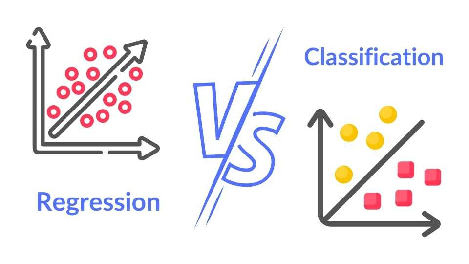
7.Modelos
Modelación
- Modelos matemáticos: simplificación de la realidad mediante un sistema de ecuaciones matemáticas.
- Los modelos permiten describir relaciones entre variables.
- Modelos permiten describir, entender y hacer predicciones.
Los modelos parten de una hipótesis.
Normalmente existen dos tipos de modelos:
- Regresión. Describir la dependencia de una variable numérica en función de otra variable numérica. Por ejemplo, regresión logística.
- Clasificación. Describir la dependencia una variable categórica en función de otras variables. Por ejemplo, regresión logística.
Diferencias entre modelos descriptivos y predictivos.
- Descriptivos: Describir una relación entre variables.
- Predictivos: A partir de un modelo descriptivo, generar predicciones en datos “no observados”.
Gran parte del interés de la ciencia de datos es generar modelos predictivos.
Normalmente el crear modelos predictivos implica dos etapas:
- Entrenamiento (training).
- Verificación (verification).
- Prueba (test).
Este esquema permite usar parte de los datos para ajustar el modelo y otra parte para evaluar qué tan buenas son las predicciones en datos que no ha visto el modelo. Por ello, se utiliza un conjunto de datos de entrenamiento, verificación y prueba.
La razón de este esquema radica en que el modelo puede memorizar los datos de entrenamiento (sobre todo al usar algoritmos de IA que pueden modelar relaciones no lineales complejas). En este escenario, al generar las predicciones sobre otro conjunto de datos, se ve que el modelo se sobreajustó, ya que obtenemos un desempeño mucho mucho menor. Normalmente los modelos van a desempeñarse un poco peor en los datos de verificación o de prueba.
Normalmente el objetivo es obtener modelos con bueno poder de generalización.
Sesgo vs varianza
Al hacer predicciones basadas en un modelo y compararlas con los valores observados pueden distinguirse dos componentes importantes del error.
- Sesgo: Desfase de los datos predichos entorno al valor objetivo.
- Varianza: Variabilidad de los datos predichos entorno al valor objetivo.
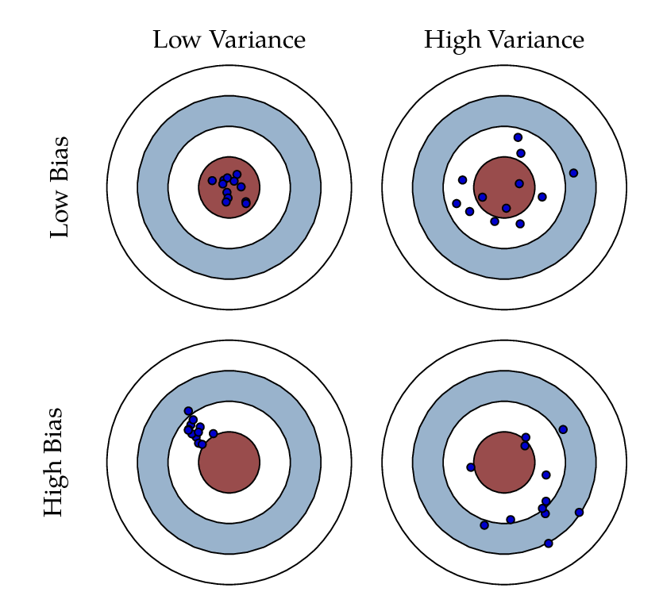
En modelos
- Subajuste (underfitting).
- Sobreajuste (overfitting).
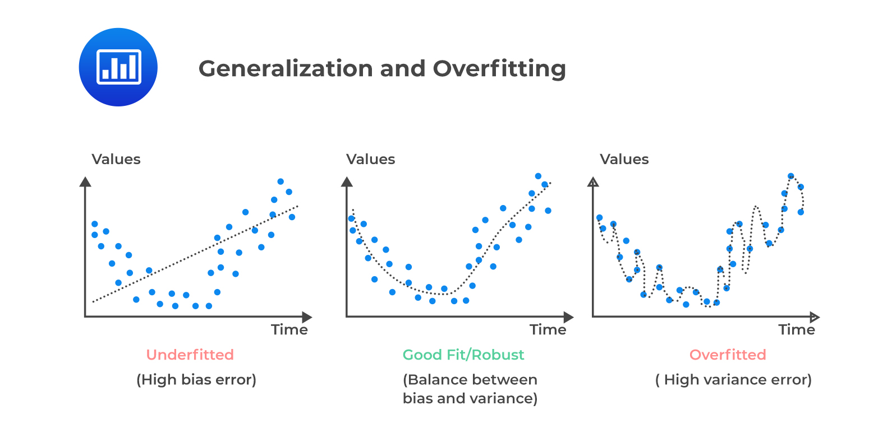
Esquema para simplemente ajustar un modelo. Desventaja de este esquema: los resultados pueden depender mucho de una “buena” o “mala” selección de datos de entrenamiento o prueba.

Esquema recomendado para comparar modelos. Ya que permiten hacer evaluaciones promediadas sobre un conjunto de datos de entrenamiento y verificación. Ventaja de este esquema: los resultados se evalúan sobre varios conjuntos de entrenamiento y prueba, por lo que se diluye la imporatncia de la selección de un partículo conjunto de entrenamiento y prueba.

Métricas de error
Usualmente los modelos cuentan con un mecanismo que permite evaluar qué tan bueno es el modelo. Esto normalmente corresponde a una medida de error o ajuste. Por ejemplo:
- R^2: coeficiente de determinación. Ajuste del modelo a los datos
- RMSE: Error cuadrático medio (Root mean squared error). Error presente en las predicciones vs datos observados.
- Exactitud: Para clasificaciones. Medidas de aciertos sobre total de observaciones.
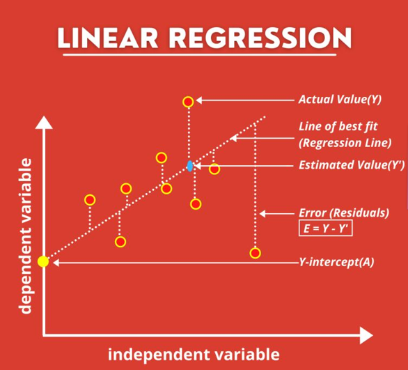
Métodos para determinar el mejor ajuste
Gran parte de los métodos de modelación tienen un método para obtener los coeficientes o parámetros de los modelos. Por ejemplo:
- Regresión lineal: mínimos cuadrados.
- Random forest: Out of the Bag (OOB).
En la clase haremos modelos sencillos, pero veremos cómo es el flujo de trabajo.
Flujo de trabajo de modelos
- Creación de datos de entrenamiento, validación y prueba.
- Ingeniería de atributos o preprocesmiento. Creación de variables predictivas (por ejemplo, scores de análisis de componentes principales, conversión de datos a logaritmo, combinación de variables en nuevas variables, etc).
- Ajuste de modelo.
- Afinación de hiperparámetros. Algunos algoritmos de IA, requiren de la exploración de parámetros. Por ejemplo, random forest, número de árboles aleatorios, número de variables máximo utilizado por corte.
- Evaluación del modelo.
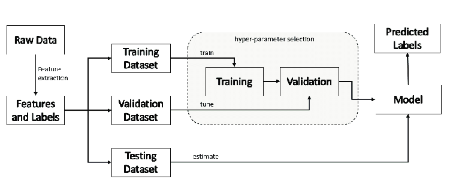
Elección de modelos
La elección de modelos puede basarse en la teoría. Por ejemplo, modelo de Michaelis-Menten basado en observaciones de velocidad de reacciones enzimáticos, o asumir un comportamiento simple (regresión lineal), o que incluya relaciones no lineales (random forest).
La elección de modelo va a determinar el ajuste máximo posible. Por ello, es frecuente comparar entre modelos.
La elección del modelo debe estar basado en la teoría.
Tidymodels
Conjunto de paquetes para modelar dentro del tidyverse:
- Resamples: dividir datos en set de entrenamiento y verificación. Posibilidad de crear submuestras o implementar validación cruzada.
- Recipes: Recetas de preprocesamiento o creación de nuevas variables predictivas.
- Parsnip: Ajustar modelos.
- Tune y Dial: Afinación de hiperparámetros de modelos.
- Yardstick: Evaluación de los modelos.
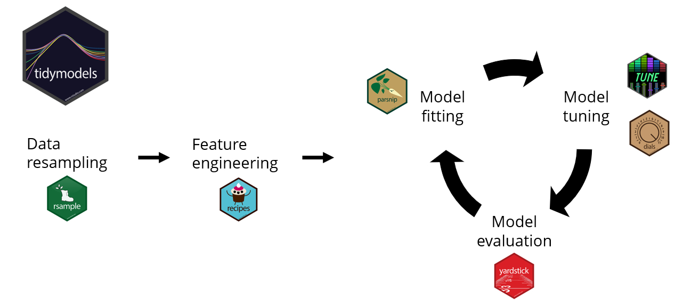
Leer mismos datos
library(readxl)
library(tidyverse)── Attaching core tidyverse packages ──────────────────────── tidyverse 2.0.0 ──
✔ dplyr 1.1.4 ✔ readr 2.1.5
✔ forcats 1.0.0 ✔ stringr 1.5.1
✔ ggplot2 3.5.1 ✔ tibble 3.2.1
✔ lubridate 1.9.3 ✔ tidyr 1.3.1
✔ purrr 1.0.2
── Conflicts ────────────────────────────────────────── tidyverse_conflicts() ──
✖ dplyr::filter() masks stats::filter()
✖ dplyr::lag() masks stats::lag()
ℹ Use the conflicted package (<http://conflicted.r-lib.org/>) to force all conflicts to become errorslibrary(tidymodels)── Attaching packages ────────────────────────────────────── tidymodels 1.2.0 ──
✔ broom 1.0.6 ✔ rsample 1.2.1
✔ dials 1.2.1 ✔ tune 1.2.1
✔ infer 1.0.7 ✔ workflows 1.1.4
✔ modeldata 1.4.0 ✔ workflowsets 1.1.0
✔ parsnip 1.2.1 ✔ yardstick 1.3.1
✔ recipes 1.1.0
── Conflicts ───────────────────────────────────────── tidymodels_conflicts() ──
✖ scales::discard() masks purrr::discard()
✖ dplyr::filter() masks stats::filter()
✖ recipes::fixed() masks stringr::fixed()
✖ dplyr::lag() masks stats::lag()
✖ yardstick::spec() masks readr::spec()
✖ recipes::step() masks stats::step()
• Use suppressPackageStartupMessages() to eliminate package startup messageslibrary(readr)
library(skimr)
knitr::opts_chunk$set(echo = TRUE)datos <- read_excel("INFyS_2015_2020_Michoacan_de_Ocampo_lHwLKIM.xlsx",
sheet = "Arbolado")Warning: Expecting numeric in BW19313 / R19313C75: got 'NULL'Warning: Expecting numeric in BX19313 / R19313C76: got 'NULL'# Preprocesamiento limpieza de datos
datos <- datos |>
# Seleccionar columnas de interés
select(IdConglomerado, DESCRIP_S7_C3, AlturaTotal_C3, DiametroNormal_C3, biomasa_kg_C3, Anio_C3, CVEECON1_C3) |>
# Renombrar columnas
rename("ParcelaId" = "IdConglomerado",
"TipoVeg" = "DESCRIP_S7_C3",
"Altura" = "AlturaTotal_C3",
"DAP" = "DiametroNormal_C3",
"Biomasa" = "biomasa_kg_C3",
"Anio" = "Anio_C3",
"Ecorregion" = "CVEECON1_C3") |>
mutate(across(c(Altura, DAP), ~ifelse(.x >= 99999, NA, .x))) |>
# Eliminar NA
drop_na(Altura, DAP) Modelos de altura en función de diámetro
Modelos para modelar altura en función de diámetro:
- lineal: H = a + b * D
– log 1: (log(H) = a + b ∗ log(D)) (equivalent to a power model)
– log 2: (log(H) = a + b ∗ log(D) + c ∗ log(D)
weibull: H = a ∗ (1 − exp(−(D/b)
michaelis: H = (A ∗ D)/(B + D)
Ver tipos de vegetación con más parcelas de muestreo.
datos |>
group_by(TipoVeg) |>
distinct(ParcelaId) |>
count()# A tibble: 32 × 2
# Groups: TipoVeg [32]
TipoVeg n
<chr> <int>
1 AGRICULTURA DE RIEGO ANUAL 1
2 AGRICULTURA DE RIEGO ANUAL Y PERMANENTE 1
3 AGRICULTURA DE RIEGO PERMANENTE 5
4 AGRICULTURA DE TEMPORAL ANUAL 4
5 AGRICULTURA DE TEMPORAL ANUAL Y PERMANENTE 1
6 AGRICULTURA DE TEMPORAL PERMANENTE 1
7 ASENTAMIENTOS HUMANOS 1
8 BOSQUE CULTIVADO 2
9 BOSQUE DE ENCINO 23
10 BOSQUE DE ENCINO-PINO 11
# ℹ 22 more rowsUno de los tipos de vegetación con mayor número de sitios de muestro es Bosque de Pino-Encino.
Aunque podríamos hacer un modelo para todos los tipos de vegetación, seguramente un solo modelo sencillo no va a permitir describir la relación entre las variables con poco error. Por ejemplo, esperaríamos que los árboles de pino fueran más árboles que algunos de selva baja caducifolia.
dfbpq <- datos |>
filter(TipoVeg == "BOSQUE DE PINO-ENCINO") |>
select(Altura, DAP)Lógica del flujo de procesos
- Entrenamiento. Entrenar algoritmo. Generar modelo a partir de un subconjunto de observaciones.
- Verificación. Probar modelos entrenados con nuevos datos para ver cuál es el mejor. Estos normalmente son una parte de los de entrenamiento. Dependiendo del flujo se pueden usar o no.
- Prueba. Ya seleccionado el mejor modelos se corre sobre estos datos para reportar la métrica de ajuste (precisión, error, etc).
Modelo lineal
Hacer modelo lineal.
lineal: H = a + b * D
Esto es muy simlar a usar la función que ya vimos de lm.
modAltDiam <- linear_reg() |>
fit(Altura ~ DAP, data = dfbpq)
modAltDiamparsnip model object
Call:
stats::lm(formula = Altura ~ DAP, data = data)
Coefficients:
(Intercept) DAP
4.2464 0.3139 Aunque se podría usar summary, mejor usemos tidy
tidy(modAltDiam)# A tibble: 2 × 5
term estimate std.error statistic p.value
<chr> <dbl> <dbl> <dbl> <dbl>
1 (Intercept) 4.25 0.143 29.6 1.07e-178
2 DAP 0.314 0.00667 47.0 0 Cómo se ve
dfbpq |>
ggplot(aes(x = DAP,
y = Altura)) +
geom_point() +
geom_smooth(method = lm,
se = FALSE,
col = "firebrick2") +
cowplot::theme_cowplot()`geom_smooth()` using formula = 'y ~ x'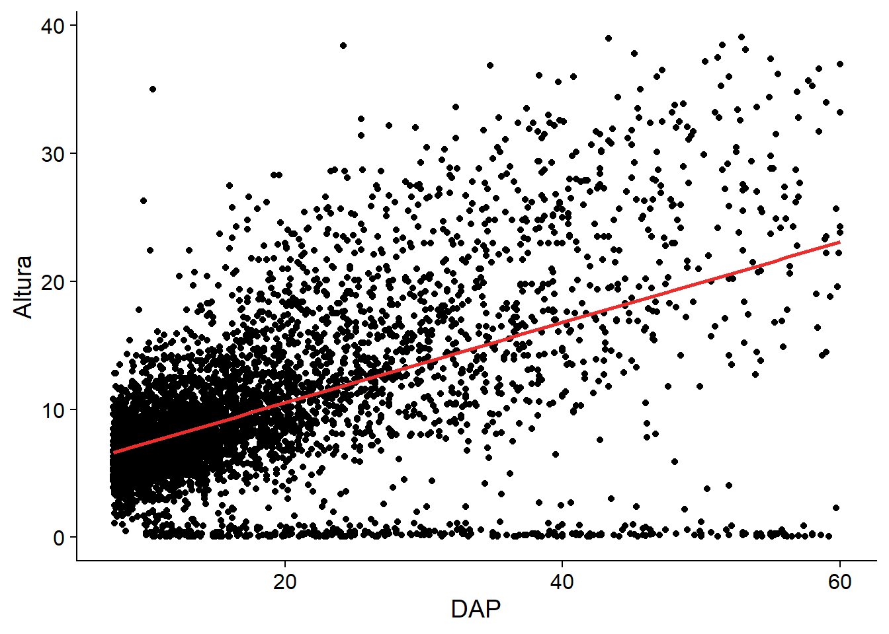
Se ve más o menos. Empecemos a trabajar con datos de entrenamiento y verificación
# Asegurar reproducibilidad con selección aleatoria
set.seed(5)
split_datos <- initial_split(dfbpq, prop = 0.75)
# Create data frames for the two sets:
train_data <- training(split_datos)
test_data <- testing(split_datos)Crear receta. Define variables dependientes y variables independientes.
receta <- recipe(Altura ~ DAP,
data = train_data) Tipo de modelo. Determina el paquete a usar para generar el modelo. Dependiendo del paquete a utilizar (set_engine) hay distintos tipos de modelos.
La ventaja de tidymodels es que se sigue la misma sintáxis sin importar el tipo de modelo ajustado. Si no se usa tidymodels, cada paquete requiere de su propia sintáxis.
Ejemplos de modelos:
- logistic_reg.
- linear_reg.
- decision_tree.
- rand_forest.
- svm_linear.
- mlp.
mod_rl <- linear_reg() |>
set_engine("glm")Crear flujo de trabajo. Agregar modelo y receta a un flujo de trabajo.
altdiam_wflow <-
workflow() |>
add_model(mod_rl) |>
add_recipe(receta)Ajustar modelo
altdiam_fit <-
altdiam_wflow |>
fit(data = train_data)Ver modelo
altdiam_fit |>
extract_fit_parsnip() |>
tidy()# A tibble: 2 × 5
term estimate std.error statistic p.value
<chr> <dbl> <dbl> <dbl> <dbl>
1 (Intercept) 4.16 0.163 25.6 6.23e-134
2 DAP 0.319 0.00763 41.8 2.01e-317Probar modelo y sacar datos
predict(altdiam_fit, test_data)# A tibble: 1,327 × 1
.pred
<dbl>
1 17.3
2 7.74
3 9.37
4 6.62
5 6.69
6 6.91
7 13.0
8 11.3
9 7.17
10 7.36
# ℹ 1,317 more rowsPredecir y comparar contra original usando los datos de test
test_preds <- altdiam_fit |>
augment(test_data)
test_preds# A tibble: 1,327 × 4
.pred .resid Altura DAP
<dbl> <dbl> <dbl> <dbl>
1 17.3 -16.3 0.97 41.2
2 7.74 -3.09 4.65 11.2
3 9.37 4.73 14.1 16.3
4 6.62 0.977 7.6 7.7
5 6.69 -1.39 5.3 7.9
6 6.91 7.39 14.3 8.6
7 13.0 6.52 19.5 27.6
8 11.3 2.28 13.6 22.4
9 7.17 -0.165 7 9.4
10 7.36 -1.46 5.9 10
# ℹ 1,317 more rowsHacerlo para datos de entrenamiento
train_preds <- altdiam_fit |>
augment(train_data)
train_preds# A tibble: 3,980 × 4
.pred .resid Altura DAP
<dbl> <dbl> <dbl> <dbl>
1 7.93 1.27 9.2 11.8
2 6.85 -2.15 4.7 8.4
3 6.78 -1.48 5.3 8.2
4 8.22 0.181 8.4 12.7
5 6.65 -4.35 2.3 7.8
6 8.70 -1.20 7.5 14.2
7 20.2 9.71 29.9 50.2
8 9.66 6.14 15.8 17.2
9 6.81 3.89 10.7 8.3
10 10.5 -10.0 0.5 20
# ℹ 3,970 more rowsSeleccionar métricas de evaluación
eval_metrics <- metric_set(rmse,rsq_trad)
test_preds |>
eval_metrics(truth = Altura,
estimate = .pred)# A tibble: 2 × 3
.metric .estimator .estimate
<chr> <chr> <dbl>
1 rmse standard 5.84
2 rsq_trad standard 0.263Comparar para datos de entrenamiento
train_preds |>
eval_metrics(truth = Altura,
estimate = .pred)# A tibble: 2 × 3
.metric .estimator .estimate
<chr> <chr> <dbl>
1 rmse standard 5.38
2 rsq_trad standard 0.306Casi siempre va a tener mejor ajuste en los datos de entrenamiento, que en los de verificación. Evaluar estos dos ajustes es buena práctica para evaluar el sobreajuste.
Modelo exponencial
log 1: (log(H) = a + b ∗ log(D)) (equivalent to a power model)
Empecemos a trabajar con datos de entrenamiento y verificación
dfbpq |>
mutate(across(c(DAP, Altura), ~log(.x+3))) |>
ggplot(aes(x = DAP,
y = Altura)) +
geom_point() +
geom_smooth(method = lm,
col = "firebrick1",
se = FALSE) +
cowplot::theme_cowplot()`geom_smooth()` using formula = 'y ~ x'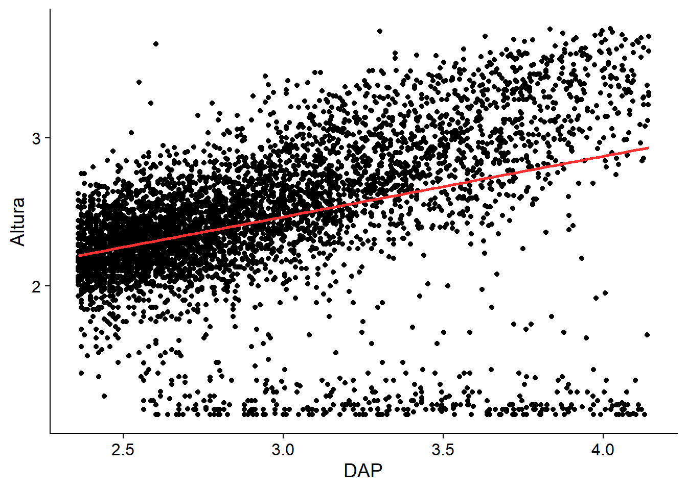
Crear receta. En este caso, se agrega la transformación de las variables numéricas a log (base natural) + 3 (para evitar valores negativos y ceros en log).
receta2 <- recipe(Altura ~ DAP,
data = train_data) |>
step_mutate_at(all_numeric(),
fn = ~log(.x+3)) Hay muchas funciones de step. Las principales familias son:
- step_impute. Rellenar datos faltantes con algún método.
- transformación individual. Por ejemplo, step_log, step_harmonic, step_mutate.
- Discretización. Pasar de una variable numérica a discreta.
- Variables dummy y codificación.
- Fechas.
- Interacciones.
- Funciones. step_normalize, step_scale.
- Transformaciones multivariadas. step_pca.
- Filtros. Seleccionar o quitar variables de acuerdo a ciertos criterios.
- Operaciones por filas.
- Otras. step_rename, step_intercept
Ver los datos después de receta
receta2 |>
prep(data = train_data) |>
bake(new_data = train_data)# A tibble: 3,980 × 2
DAP Altura
<dbl> <dbl>
1 2.69 2.50
2 2.43 2.04
3 2.42 2.12
4 2.75 2.43
5 2.38 1.67
6 2.84 2.35
7 3.97 3.49
8 3.01 2.93
9 2.42 2.62
10 3.14 1.25
# ℹ 3,970 more rowsTipo de modelo
show_engines("linear_reg")# A tibble: 7 × 2
engine mode
<chr> <chr>
1 lm regression
2 glm regression
3 glmnet regression
4 stan regression
5 spark regression
6 keras regression
7 brulee regressionmod_rl2 <- linear_reg() |>
set_engine("glm")Crear flujo de trabajo
altdiam_wflow2 <- workflow() |>
add_model(mod_rl2) |>
add_recipe(receta2)Ajustar modelo
altdiam_fit2 <-
altdiam_wflow2 |>
fit(data = train_data)Ver modelo
altdiam_fit2 |>
extract_fit_parsnip() |>
tidy()# A tibble: 2 × 5
term estimate std.error statistic p.value
<chr> <dbl> <dbl> <dbl> <dbl>
1 (Intercept) 1.20 0.0480 25.0 3.27e-128
2 DAP 0.423 0.0161 26.2 7.56e-140Predecir y comparar contra original en datos de verificación
test_preds2 <- altdiam_fit2 |>
augment(test_data)
test_preds2# A tibble: 1,327 × 4
.pred .resid Altura DAP
<dbl> <dbl> <dbl> <dbl>
1 2.80 -1.43 0.97 41.2
2 2.32 -0.289 4.65 11.2
3 2.45 0.386 14.1 16.3
4 2.20 0.157 7.6 7.7
5 2.21 -0.0954 5.3 7.9
6 2.24 0.613 14.3 8.6
7 2.65 0.465 19.5 27.6
8 2.57 0.240 13.6 22.4
9 2.27 0.0363 7 9.4
10 2.29 -0.100 5.9 10
# ℹ 1,317 more rowsPredecir y comparar contra original en datos de entrenamiento
train_preds2 <- altdiam_fit2 |>
augment(train_data)
train_preds2# A tibble: 3,980 × 4
.pred .resid Altura DAP
<dbl> <dbl> <dbl> <dbl>
1 2.34 0.160 9.2 11.8
2 2.23 -0.189 4.7 8.4
3 2.22 -0.107 5.3 8.2
4 2.37 0.0675 8.4 12.7
5 2.21 -0.540 2.3 7.8
6 2.40 -0.0534 7.5 14.2
7 2.88 0.611 29.9 50.2
8 2.47 0.461 15.8 17.2
9 2.23 0.390 10.7 8.3
10 2.53 -1.27 0.5 20
# ℹ 3,970 more rowsSeleccionar métricas de evaluación
eval_metrics <- metric_set(rmse,rsq_trad)
test_preds2 |>
mutate(across(.pred, ~exp(.x)-3)) |>
eval_metrics(truth = Altura,
estimate = .pred)# A tibble: 2 × 3
.metric .estimator .estimate
<chr> <chr> <dbl>
1 rmse standard 6.01
2 rsq_trad standard 0.220train_preds2 |>
mutate(across(.pred, ~exp(.x)-3)) |>
eval_metrics(truth = Altura,
estimate = .pred)# A tibble: 2 × 3
.metric .estimator .estimate
<chr> <chr> <dbl>
1 rmse standard 5.62
2 rsq_trad standard 0.241Comparacion de los dos modelos
Ver los resultados anteriores para recordar.
test_preds |>
eval_metrics(truth = Altura,
estimate = .pred)# A tibble: 2 × 3
.metric .estimator .estimate
<chr> <chr> <dbl>
1 rmse standard 5.84
2 rsq_trad standard 0.263test_preds2 |>
mutate(across(.pred, ~exp(.x)-3)) |>
eval_metrics(truth = Altura,
estimate = .pred)# A tibble: 2 × 3
.metric .estimator .estimate
<chr> <chr> <dbl>
1 rmse standard 6.01
2 rsq_trad standard 0.220Comparación de los gráficos
coeficientes <- altdiam_fit |>
extract_fit_parsnip() |>
tidy()
coeficientes2 <- altdiam_fit2 |>
extract_fit_parsnip() |>
tidy()
test_preds |>
ggplot(aes(x = DAP,
y = Altura)) +
geom_point() +
geom_abline(intercept = coeficientes$estimate[1],
slope = coeficientes$estimate[2],
col = "red",
lwd = 2)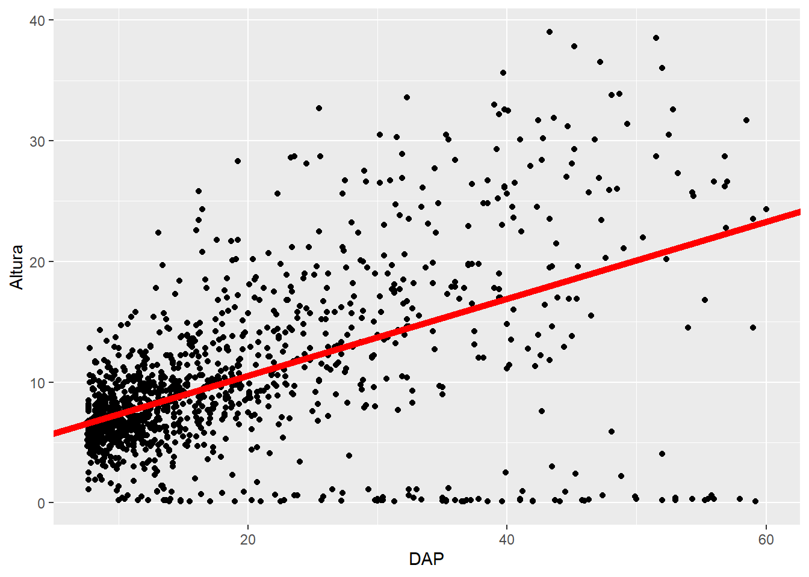
test_preds2 |>
# .pred ya está con la transformación de log
# mutate(across(.pred, ~exp(.x)-3)) |>
mutate(across(c(DAP,Altura), ~log(.x+3))) |>
ggplot(aes(x = DAP,
y = Altura)) +
geom_point() +
geom_abline(intercept = coeficientes2$estimate[1],
slope = coeficientes2$estimate[2],
col = "red",
lwd = 2)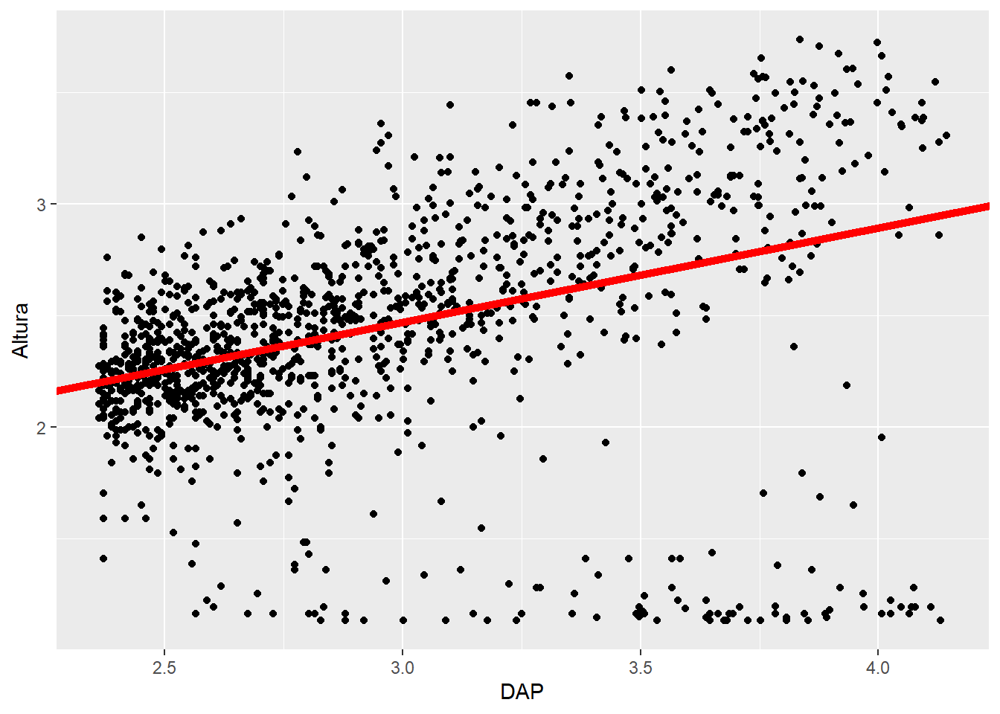
Observados vs predichos
test_preds |>
ggplot(aes(x = Altura,
y = .pred)) +
geom_point() +
geom_abline(intercept = 0,
slope = 1,
col = "red",
lwd = 2) +
labs(x = "Altura obs", y = "Altura pred")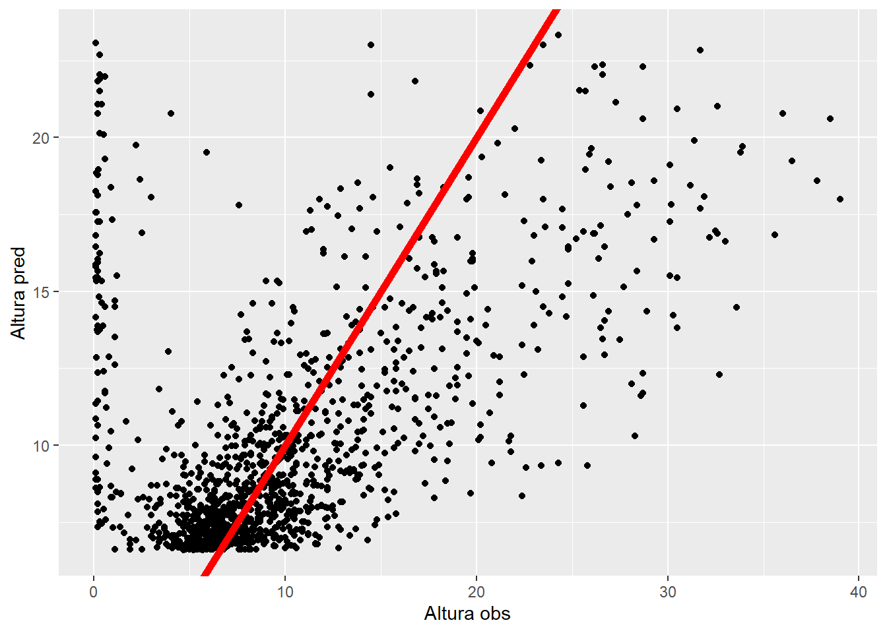
test_preds2 |>
ggplot(aes(x = Altura,
y = exp(.pred)-3)) +
geom_point() +
geom_abline(intercept = 0,
slope = 1,
col = "red",
lwd = 2)+
labs(x = "Altura obs", y = "Altura pred")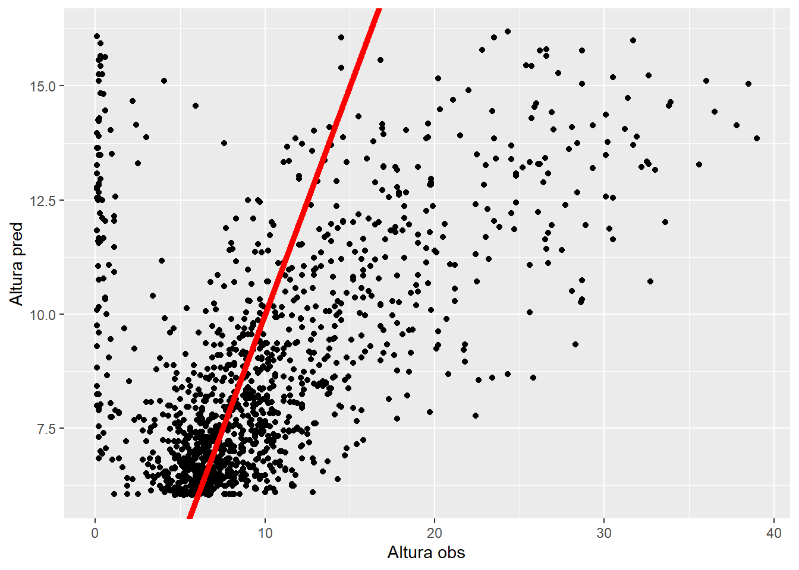
Hasta aquí creamos cada modelo por separado con un solo conjunto de datos entrenamiento y prueba. Sin embargo, para poder tener más confianza sobre qué modelo es mejor vamos a usar un proceso de validación cruzada para evaluar el desempeño de los dos modelos con distintos conjuntos de datos de entrenamiento y verificación. Aquí sí se va a usar un conjunto de datos de verificación.
Validación cruzada: Comparación de modelos
La validación cruzada es similar a los procedimientos de remuestreo que vimos en la clase anterior. Varias formas de hacer validación cruzada:
- vfold. Alta varianza. Rápido. Cada set se usa como prueba una sola vez.
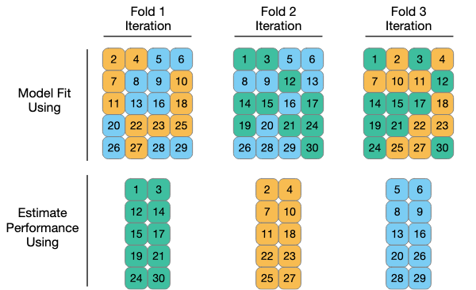
- leave-one-out. Lento. Baja varianza, puede tener alto sesgo.
- Montecarlo. Lento. Baja varianza, puede tener alto sesgo.
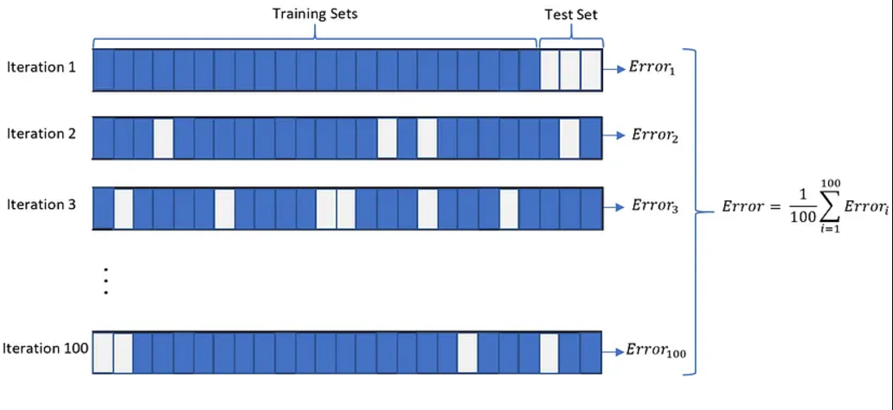
Al usar collect_metrics se obtienen las de verificacin´.
# Asegurar reproducilidad
set.seed(10)
df3 <- dfbpq |>
dplyr::select(Altura, DAP)
df_split <- initial_split(df3, prop = 0.6)
df_train <- training(df_split)
df_test <- testing(df_split)
df_r <- vfold_cv(df_train,
v = 10)
df_r$splits[[1]]
<Analysis/Assess/Total>
<2865/319/3184>
[[2]]
<Analysis/Assess/Total>
<2865/319/3184>
[[3]]
<Analysis/Assess/Total>
<2865/319/3184>
[[4]]
<Analysis/Assess/Total>
<2865/319/3184>
[[5]]
<Analysis/Assess/Total>
<2866/318/3184>
[[6]]
<Analysis/Assess/Total>
<2866/318/3184>
[[7]]
<Analysis/Assess/Total>
<2866/318/3184>
[[8]]
<Analysis/Assess/Total>
<2866/318/3184>
[[9]]
<Analysis/Assess/Total>
<2866/318/3184>
[[10]]
<Analysis/Assess/Total>
<2866/318/3184>Ver resultados por fold.
resuls <- workflow_set(preproc = list(simple = receta,
log = receta2),
models = list(lm = mod_rl)) |>
workflow_map(fn = "fit_resamples",
# Options to `workflow_map()`:
seed = 1101,
verbose = TRUE,
# Options to `fit_resamples()`:
resamples = df_r)i 1 of 2 resampling: simple_lm✔ 1 of 2 resampling: simple_lm (500ms)i 2 of 2 resampling: log_lm✔ 2 of 2 resampling: log_lm (691ms)resuls# A workflow set/tibble: 2 × 4
wflow_id info option result
<chr> <list> <list> <list>
1 simple_lm <tibble [1 × 4]> <opts[1]> <rsmp[+]>
2 log_lm <tibble [1 × 4]> <opts[1]> <rsmp[+]># Ver resultados desagregados
resuls |>
filter(wflow_id == "simple_lm") |>
select(result) |>
unnest(result)# A tibble: 10 × 4
splits id .metrics .notes
<list> <chr> <list> <list>
1 <split [2865/319]> Fold01 <tibble [2 × 4]> <tibble [0 × 3]>
2 <split [2865/319]> Fold02 <tibble [2 × 4]> <tibble [0 × 3]>
3 <split [2865/319]> Fold03 <tibble [2 × 4]> <tibble [0 × 3]>
4 <split [2865/319]> Fold04 <tibble [2 × 4]> <tibble [0 × 3]>
5 <split [2866/318]> Fold05 <tibble [2 × 4]> <tibble [0 × 3]>
6 <split [2866/318]> Fold06 <tibble [2 × 4]> <tibble [0 × 3]>
7 <split [2866/318]> Fold07 <tibble [2 × 4]> <tibble [0 × 3]>
8 <split [2866/318]> Fold08 <tibble [2 × 4]> <tibble [0 × 3]>
9 <split [2866/318]> Fold09 <tibble [2 × 4]> <tibble [0 × 3]>
10 <split [2866/318]> Fold10 <tibble [2 × 4]> <tibble [0 × 3]>Ver métricas de splits
resuls |>
filter(wflow_id == "simple_lm") |>
select(result) |>
unnest(result) |>
unnest(.metrics)# A tibble: 20 × 7
splits id .metric .estimator .estimate .config .notes
<list> <chr> <chr> <chr> <dbl> <chr> <list>
1 <split [2865/319]> Fold01 rmse standard 5.91 Preprocessor… <tibble>
2 <split [2865/319]> Fold01 rsq standard 0.189 Preprocessor… <tibble>
3 <split [2865/319]> Fold02 rmse standard 5.26 Preprocessor… <tibble>
4 <split [2865/319]> Fold02 rsq standard 0.267 Preprocessor… <tibble>
5 <split [2865/319]> Fold03 rmse standard 5.53 Preprocessor… <tibble>
6 <split [2865/319]> Fold03 rsq standard 0.362 Preprocessor… <tibble>
7 <split [2865/319]> Fold04 rmse standard 5.43 Preprocessor… <tibble>
8 <split [2865/319]> Fold04 rsq standard 0.326 Preprocessor… <tibble>
9 <split [2866/318]> Fold05 rmse standard 6.01 Preprocessor… <tibble>
10 <split [2866/318]> Fold05 rsq standard 0.256 Preprocessor… <tibble>
11 <split [2866/318]> Fold06 rmse standard 5.69 Preprocessor… <tibble>
12 <split [2866/318]> Fold06 rsq standard 0.194 Preprocessor… <tibble>
13 <split [2866/318]> Fold07 rmse standard 5.76 Preprocessor… <tibble>
14 <split [2866/318]> Fold07 rsq standard 0.350 Preprocessor… <tibble>
15 <split [2866/318]> Fold08 rmse standard 5.47 Preprocessor… <tibble>
16 <split [2866/318]> Fold08 rsq standard 0.261 Preprocessor… <tibble>
17 <split [2866/318]> Fold09 rmse standard 5.47 Preprocessor… <tibble>
18 <split [2866/318]> Fold09 rsq standard 0.278 Preprocessor… <tibble>
19 <split [2866/318]> Fold10 rmse standard 5.41 Preprocessor… <tibble>
20 <split [2866/318]> Fold10 rsq standard 0.267 Preprocessor… <tibble>Ver resultados resumidos, calcula el promedio y error estándar.
mfits <- resuls |>
collect_metrics()
mfits# A tibble: 4 × 9
wflow_id .config preproc model .metric .estimator mean n std_err
<chr> <chr> <chr> <chr> <chr> <chr> <dbl> <int> <dbl>
1 simple_lm Preprocessor1_… recipe line… rmse standard 5.59 10 0.0759
2 simple_lm Preprocessor1_… recipe line… rsq standard 0.275 10 0.0184
3 log_lm Preprocessor1_… recipe line… rmse standard 0.475 10 0.00865
4 log_lm Preprocessor1_… recipe line… rsq standard 0.120 10 0.0164 Sacar mejor modelo de regresión simple. Finalizar el flujo de trabajo y ajustar a datos de entrenamiento (ya sin la validación cruzada)y evaluar sobre datos de entrenamiento.
mejor <- resuls |>
extract_workflow_set_result("simple_lm") %>%
select_best(metric = "rmse")
mod <- resuls |>
extract_workflow("simple_lm") %>%
finalize_workflow(mejor) %>%
fit(data = df_train)
mod |>
augment(df_train) |>
eval_metrics(truth = Altura,
estimate = .pred)# A tibble: 2 × 3
.metric .estimator .estimate
<chr> <chr> <dbl>
1 rmse standard 5.59
2 rsq_trad standard 0.274Ver el modelo lineal
Last_fit entrena sobre entrenamiento y evalua sobre test.
mejor <- resuls |>
extract_workflow_set_result("simple_lm") %>%
select_best(metric = "rmse")
mod <- resuls |>
extract_workflow("simple_lm") %>%
finalize_workflow(mejor) %>%
last_fit(split = df_split)
test_preds <- mod %>%
collect_predictions()
test_preds |>
eval_metrics(truth = Altura,
estimate = .pred)# A tibble: 2 × 3
.metric .estimator .estimate
<chr> <chr> <dbl>
1 rmse standard 5.36
2 rsq_trad standard 0.322Ver el modelo log
mejor <- resuls |>
extract_workflow_set_result("log_lm") %>%
select_best(metric = "rmse")
mod <- resuls |>
extract_workflow("log_lm") %>%
finalize_workflow(mejor) %>%
last_fit(split = df_split)
test_preds <- mod %>%
collect_predictions()
test_preds |>
mutate(across(c(Altura, .pred), ~ exp(.x)-3)) |>
eval_metrics(truth = Altura,
estimate = .pred)# A tibble: 2 × 3
.metric .estimator .estimate
<chr> <chr> <dbl>
1 rmse standard 5.80
2 rsq_trad standard 0.208Es mejor una simple regresión lineal